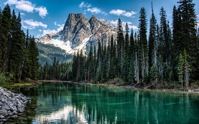

İDhaulagiri dağı Nepal sınırları içinde yer alır ve dünyanın en yüksek 7. dağıdır. Annapurna dağı, Dhaulagiri‘nin 34 km. doğusunda kalır ve dünyanın en derin nehri Kaligandaki, bu iki dağ arasında akar. Burası Nepal’in en önemli turizm bölgelerinden biridir.
Dhaulagiri‘ye ilk kez, 1950 yılında, Maurice Herzog liderliğinde bir Fransız ekibi keşfe geldi. Ancak çıkılabilecek bir rota bulamadılar.
1953 – 1958 yılları arasında, kuzey yüzüne 5 ekspedisyon düzenlendi ama hiç biri başarılı olamadı.
1959 yılında Fritz Moravek liderliğinde bir Avusturya ekspedisyonu, ilk kez kuzeydoğu sırtından dağa tırmanma girişiminde bulundu.
960 yılında, bir Avusturya-İsviçre ekspedisyonundan, Kurt Diemberger, P. Diener, E. Forrer, A. Schelbert, Nyima Dorje Sherpa ve Nawang Dorje Sherpa zirveye ulaşmayı başardılar.
1969 yılında da bir ABD ekspedisyonun girişimi, 5 ABD’li dağcı ve 2 Sherpa’nın ölümü ile sonuçlandı.
Dağın ilk Türk çıkışı 1 Mayıs 2009’da Tunç Fındık tarafından yapılmıştır.
